Her Majesty the Queen v. Mark Anthony Smith
This transcript was made with automated artificial intelligence models and its accuracy has not been verified. Review the original webcast here.
Inaudible.
Justice Moldaver (00:00:24): Good morning, everyone.
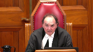
This is the matter of Her Majesty the Queen and Mark Anthony Smith.
Mila Shaw and John R.W. Caldwell for the appellant, Her Majesty the Queen.
Eric Pertsky and Garth Barrier for the respondent, Mark Anthony Smith.
Yes, please, Ms. Shaw, go ahead.
Good morning, everyone.
This is the matter of Her Majesty the Queen and Mark Anthony
Speaker 2 (00:00:54): Justices, this appeal, as of right, raises two questions.
One, did the trial judge misapprehend the evidence?
Justice Moldaver (00:01:03): Yes, my fault.
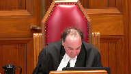
I forgot to read out that there’s a publication ban on this matter pursuant to section 486.42 of the criminal code from the lower courts.
I thank my colleague justice Karygotsanis for reminding of that and we got in quickly enough so that no harm could be done.
Okay, go ahead now.
Thank you.
Speaker 2 (00:01:26): Thank you, Justice Mulder.
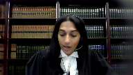
This appeal, as of right, raises two questions.
One, did the trial judge misapprehend the evidence or give insufficient reasons by failing to refer to two prior statements made by the complainant to her friend shortly after the event?
And two, did the trial judge misapprehend the evidence when she commented that there was no real dispute in this case?
And the Crown’s position is that Justice Dixon, the dissenting justice, got it right.
The judge was not required to refer to every item of evidence that she considered or address every inconsistency.
And the two statements at issue on this appeal were simply insignificant in the context of the case.
And with respect to the comment, there’s no real dispute about what happened.
The majority of the Court of Appeal took that comment out of context, ignoring the fact that the reasons clearly show that the judge was aware of the factual disputes that needed to be resolved, including the central issue of consent.
Given my limited time this morning, my submissions today will focus on the prior statement issue.
The Crown will rely on its factum with respect to the no real dispute comment, subject, of course, to any questions, though I will explain during the course of my submissions how that comment plays into the prior statement issue.
To begin, it’s critical to understand exactly which statements are at issue on this appeal, how they were introduced into the evidence, and their tendered purpose by the party, because there’s some confusion in the majority’s reasons.
This appeal centers around a conversation that the complainant had with her friend, Ms. Johnston, right after the event, eight years before the trial.
And evidence of that conversation was initially adduced by the Crown in a voir dire to show that the complainant had been consistent from the start about the fact that she had been sexually assaulted, thereby rebutting one of the primary defence theories, which was that the complainant was originally unsure about what happened, but that her memory and her perception were later coloured by her work at the Rape Crisis Centre and her so-called radical feminist belief system.
Ms. Johnston testified on the voir dire that the complainant told her, I woke up and he was inside of me, and that the complainant then went on to say that she tried to get the respondent off.
The respondent held her down.
She was on her stomach and he came in from behind.
And when Ms. Johnston suggested that the complainant go to the police, the complainant said that she did not want to.
It wasn’t a big deal.
It was only for a few minutes.
And the Crown took the position that in light of these prior statements, the Rape Crisis Centre theory had zero traction.
And that was an argument that was ultimately accepted by the trial judge.
And even though the reasons don’t contain an explicit ruling on the prior consistent statement issue, the judge rejected the Rape Crisis Centre theory because the complainant was, in the judge’s words, clear on what happened when she spoke to her friend right after the event.
So the judge used the prior consistent statements that were adduced in the voir dire for the purpose requested by the Crown, which was to rebut the allegation of recent fabrication.
And the voir dire evidence and the judge’s use of those prior consistent statements is not an issue on this appeal.
For its part, the defence also relied on the complainant’s conversation with Ms. Johnston.
But for a different purpose.
During cross-examination of Ms. Johnston in the trial proper, Defence Council adduced two specific things that the complainant said to Ms. Johnston in an attempt to show that the complainant had been inconsistent.
And it’s those two statements that are at the heart of this appeal.
And they are, one, I woke up and he was inside of me, a statement that was entirely consistent with the complainant’s trial evidence that she had been sexually assaulted, but inconsistent with respect to exactly how the assault began.
And two, after the complainant described what was unquestionably a sexual assault, Ms. Johnston told the complainant that she had been raped, and the complainant’s response was, I don’t know if he did, like it was only for a few minutes.
So again, a statement that was consistent with the complainant’s evidence that she had been sexually assaulted, but that demonstrated some confusion about the law.
In convicting the respondent, the trial judge reviewed the evidence in detail, set out the law correctly, addressed the main defence theories, and responded to the live issues in this case, which were consent and credibility.
What the judge did not do was spell out how these two prior statements affected her assessment of the complainant’s credibility.
And it was for that reason that the majority of the Court of Appeal overturned the respondent’s sexual assault conviction, finding that the judge either failed to consider the statements and thereby misapprehended the evidence, or alternatively gave insufficient reasons.
The majority also commented that the judge failed to rule on the admissibility of Ms. Johnston’s evidence.
But I want to be clear here that the two statements that are at issue before this court were adduced by defence counsel in the trial proper, and their admissibility was never at issue at trial.
And so the suggestion that the judge had to rule on the admissibility of these two statements was just wrong, and the admissibility of the two statements is not an issue before this court.
The only question today is whether the judge’s failure to explain why these two statements did not raise a reasonable doubt warranted a new trial, either on the basis of a misapprehension of the evidence or insufficiency of reasons.
And that turns on the significant…
Justice Rowe (00:07:44): I beg your pardon, I’m not sure that that’s really an adequate or a proper characterization.
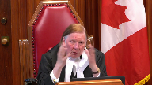
Is it proper to say that the failure to deal with this gave rise or didn’t give rise to a reasonable doubt?
Isn’t really the point a bit more precise?
That is, were these statements, which on their face appear to be inconsistent to me, have such a nature that it was necessary for the trial judge to resolve it, either by saying, for example, this is of no consequence.
This is a detail of no consequence, and therefore it doesn’t affect the credibility of the complainant at all.
The failure to deal with it was that, a failure properly to consider the evidence.
As to whether or not it gave rise to a reasonable doubt, that’s a more complex matter in which we have to take into account all of the evidence.
I mean, I guess what I’m saying, to be more precise, is I think the argument is, this was of such a nature that it needed to be dealt with, and the contrary position is, no, it was of a relatively minor nature, and the fact that it wasn’t dealt with specifically is of no consequence.
Speaker 2 (00:09:13): I agree with that Justice Roe.
This appeal turns on the significance or the importance of these two statements.
Because the law doesn’t require a judge to refer to every item of evidence that she considered or to address every inconsistency or every argument of counsel.
All that’s required is that the judge’s reasons show that she grappled with the substance of the live issues in this case.
And as Justice Roe, you’ve pointed out the Crown’s position is that when the prior statements are assessed in the entire context of the case.
It’s apparent that these so-called inconsistent statements were not in any way material inconsistencies or critical issues.
That the judge needed to expressly deal with in her reasons and I will address each statement in turn, starting with I woke up and he was inside of me.
And here the alleged inconsistency is this.
Miss Johnston testified that when she spoke to the complainant on the morning of the offense, the complainant said that she woke up and the respondent was inside of her.
At trial, however, the complainant testified that she woke up to the respondent pulling off her shorts and then flipping her over onto her stomach and then penetrating her.
And so there’s a potential inconsistency regarding whether the respondent was already penetrating the complainant when she woke up, or whether the complainant woke up to him first pulling off her shorts and the judge did not explicitly address this inconsistency.
The words I woke up and he was inside of me do not appear in the reasons for judgment.
But that doesn’t mean, as the majority and the respondent seem to suggest, that the judge did not consider or she ignored this evidence.
Reasons for judgment are not meant to be a verbalization of the judge’s entire reasoning process and a judge isn’t required to refer to all of the evidence she considered.
And here, the judge reviewed the evidence in detail and importantly, she expressly averted to both Miss Johnston’s trial evidence about her conversation with the complainant shortly after the event, as well as Miss Johnston’s voir dire evidence.
And so the judge was obviously alive to Miss Johnston’s evidence.
And the fact that she didn’t refer to this single statement over the course of her careful reasons doesn’t mean she ignored that evidence, but simply suggest that she did not regard it as significant.
And as Justice Dixon put it, that is unsurprising.
And I say that for the following reasons.
First, while I agree with the respondent that prior inconsistency was not a verbalization of the judge’s entire reasoning process, first, while I agree with the respondent that prior inconsistent statements can be a useful way to assess a witness’s credibility, not all prior inconsistent statements are created equally.
And here, the statement, I woke up and he was inside of me, merely revealed some inconsistency about the detail of the assault.
It didn’t go to the central allegation in this case, which was non-consensual intercourse.
And indeed, the statement still described non-consensual intercourse.
And the inconsistency becomes even more minor when it’s considered in the context of the entire conversation.
The complainant also told Miss Johnston that she tried to get the respondent off, he held her down, she was on her stomach, and he came in from behind.
All of which was consistent with her trial testimony.
So she was only inconsistent on a single detail, which was exactly when she woke up during the course of this assault.
And that’s just not the kind of inconsistency that could have had any impact on her overall credibility or reliability, and it’s not the kind of significant inconsistency the judge had to expressly deal with.
It’s also not an inconsistency that the judge needed to resolve in order to convict.
This isn’t a case where the judge had to make a factual determination about whether the respondent was already penetrating the complainant when she woke up or whether he first took off her shorts.
Because either way, it was a sexual assault, and for obvious reasons, the defense never suggested that the complainant was asleep during intercourse.
In fact, the respondent was specifically asked and he denied that there was any sexual activity while the complainant was sleeping.
So when the judge stated that there was no real dispute in this case about what happened, she was right.
There was no dispute in terms, there was no dispute at trial in terms of the nature of the sexual activity.
The dispute was about whether the complainant consented.
Second, it’s important to consider the context in which the statement was made.
The statement, I woke up and he was inside of me, wasn’t made during the course of a police interview or during a preliminary inquiry where the complainant would be expected to provide a detailed and thorough account of what happened.
It was made in the context of a conversation with a friend over coffee while the complainant was under emotional stress.
And as the complainant testified at trial, she did not provide Ms. Johnston with all of the details.
In those circumstances, it’s not surprising that the complainant would describe the assault in short form, leaving out some of the details.
I woke up and he was inside of me.
It makes sense, given the context of the statement.
That the judge would not view the omission of some details as significant.
Third, the record shows that this inconsistency wasn’t actually a significant issue at trial.
It was not the kind of issue that it’s now being made on appeal.
It’s true that in closing submission, the complainant would be expected to provide a detailed and thorough account of what happened.
It’s true that in closing submissions, defense counsel mentioned the statement.
Justice Moldaver (00:15:15): Excuse me, sorry.
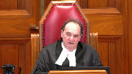
I think maybe you could even go further here and suggest that it is implicit in the trial judge’s reasons that she effectively, A, didn’t even think that there were inconsistencies, certainly of any consequence, but more importantly, or equally importantly, she found that what was said in the conversations shortly after the event and at the restaurant and so on to be consistent.
And in fact, she uses that evidence to rebut the suggestion that the complainant made up, concocted the story when she saw the name at the rape crisis centre.
So I mean, if we look at the reasons of the trial judge fairly and as a whole, it seems to me that it’s quite obvious that she saw these two so-called allegedly inconsistent statements as either not inconsistent statement or of trivial consequence.
But what was really important was that they confirmed that she did complain about being sexually assaulted right after the event or closely to it to her friend.
Speaker 2 (00:16:33): Yes, I entirely agree, Justice Moldaver.
The reasons, when they’re read as a whole, and in light of the record, demonstrate that the judge, as you’ve said, either didn’t view these statements as inconsistent, which is fair when they’re looked at in context, or viewed them as so inconsequential that she didn’t need to mention them.
And that’s borne out by the record because defense counsel didn’t make a big deal about this statement.
While defense counsel mentioned it and pointed out that it didn’t accord with the complainant’s trial testimony, and that that could cast some doubt on her memory, that was all defense counsel said.
Defense counsel didn’t place any particular emphasis or importance on the statement, I woke up and he was inside of me, as an inconsistency.
It wasn’t the focus of his submissions, but it was just one of many issues that counsel raised.
And in fact, when you look at the transcripts, there are 30 pages of transcripts dedicated to the defense closing with respect to this complainant, and the reference to this inconsistency is just a few lines on a single page.
And in fact, the record shows that the primary reason the defense wanted to bring out this statement, I woke up and he was inside of me, wasn’t to show that the complainant had been inconsistent, but instead was to advance the theory that the sexual assault was consensual, but that the complainant was so intoxicated that she blacked out, she had a memory gap, and she only began to remember at the point where the respondent was, quote, inside of her.
And we see that both in defense counsel’s cross-examination of the complainant, as well as in his closing submissions.
And so it’s clear that that was the primary reason that the defense was so intoxicated that she blacked out, she had a memory gap, and she only began to remember at the point where the respondent was, quote, inside of her.
And the final point I want to make with respect to the statement, I woke up and he was inside of me, is that there is a real question as to whether the complainant even made that exact statement.
The conversation between the complainant and Ms. Johnston took place eight years before the trial, it was unrecorded, and the complainant denied making that statement.
And so it’s entirely, it’s entirely possible that Ms. Johnston misheard, misunderstood, or simply misremembered exactly what the complainant said, particularly because that statement did not align with either the complainant or the respondent’s trial testimony.
And so in all of those circumstances, it was open to the judge to find that the prior statement, I woke up and he was inside of me, was either not an inconsistent statement at all, or was simply of no consequence in the overall context of this case.
And as Justice Dixon put it, the absence of specific mention of that aspect of the evidence does not call into question the judge’s assessment of the complainant’s credibility or the safety of the conviction.
And I’ll turn now to the second statement at issue.
The complainant’s statement to Ms. Johnston, I don’t know if he did, it was only for a few minutes.
And I just have two brief points to make with respect to this statement.
First, it’s clear on the face of the reasons that the judge did consider this statement.
Unlike the statement, I woke up and he was inside of me, the judge specifically averted to Ms. Johnston’s evidence that she told the complainant she’d been raped.
And the complainant said, I don’t know if he did, it was only for a few minutes.
The judge also set out the complainant’s evidence on this point, which was that she was never unsure about the fact that she was raped.
She knew it was rape right away.
And she called it rape at the time.
And so the judge was alive to the prior statement, as well as any potential inconsistency about whether the complainant immediately knew that what happened constituted rape.
And then the judge went on to reject the defense argument that the complainant was initially unsure about what happened, but that her memory and perception were later colored by her work at the rape crisis center, finding that the complainant was clear on what happened when she spoke to her friend.
And so when the reasons are looked at as a whole, it’s apparent that the judge resolved any inconsistency here by finding that the complainant was never uncertain about what happened to her.
That’s a factual finding that was available to the trial judge on the evidence, and that is unassailable on appeal.
The evidence as a whole suggested that the complainant was always clear that she had been sexually assaulted, but questioned whether it was serious enough to report to the police because it only lasted for a few minutes.
The complainant herself testified that she told Ms. Johnston that the respondent had raped her.
Mr. Ismurnoglu testified that the complainant said something about non-consensual sex in the elevator.
And Ms. Johnston clarified that the complainant was clear on what happened, but was simply having trouble admitting the severity of what happened.
And so it was open to the judge to find that this statement either wasn’t inconsistent or simply wasn’t significant.
And my second point is that in any event, an inconsistency about whether the complainant immediately knew that what happened constituted rape had minimal, if any, probative value in the context of this case.
And the judge had no obligation to put any weight on it or say anything more about it than she did.
A sexual assault complainant’s uncertainty about whether an incident meets the legal definition of rape has nothing to do with whether she was, in fact, sexually assaulted.
And her understanding about the law is entirely irrelevant, particularly where, as here, what she describes is unquestionably a sexual assault.
And recall that the complainant also said that she woke up to find the respondent inside of her, she tried to get him off, he held her down, she was on her stomach, and he came in from behind.
So the fact that the complainant may have questioned whether that would be considered rape because it only lasted for a few minutes couldn’t have had any impact on her credibility or reliability.
Justice Moldaver (00:23:59): Well, I think with respect that the defence was entitled to look at this, look at the fact that the complaint to the police didn’t come until five years later after the complainant was at the rape crisis centre and saw what she saw on the board.
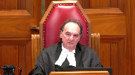
So I think it was fair for the defence to try and say, hey, wait a minute, you know, she only came to the decision that this was going to call it rape because of what she saw there.
So I think that was fair, but the trial judge rejected it and so.
Speaker 2 (00:24:36): Exactly, Justice Moldaver.
I think it was a fair argument, but it was, that suggestion was belied by what the complainant told Ms. Johnston.
And that’s what the judge found, that that allegation of recent fabrication was rebutted by the complainant’s conversation with Ms. Johnston.
And at that point, when the judge came to that conclusion, she didn’t have to say anything more about an inconsistency regarding the complainant’s state of mind.
That Ms. Johnston said that she was somewhat uncertain about whether this constituted rape, but that the complainant testified that she knew it was rape right away.
That potential inconsistency had no significance.
And in the end, the judge was required to sift through a large body of evidence, multiple defense theories and arguments relating to two different complainants.
The reasons are lengthy, and they respond to the critical issues in this case.
They explain to the respondent why he was convicted, and they permit meaningful appellate review.
And in overturning the conviction, simply because the judge did not adequately address two prior statements that had little significance in the overall context of this case, the majority’s decision essentially amounts to a ruling that trial judges must avert to every inconsistency and every argument of counsel, no matter how minor.
And that’s not only inconsistent with decades of jurisprudence, but it’s also unworkable, and it would require busy trial judges with heavy case loads to write reasons for judgment that are essentially laundry lists of the evidence.
Justice Rowe (00:26:23): Well, you know, it’s one way to look at the majority reasons.
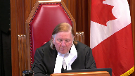
One, I have at least a sense when I read the majority reasons that they felt that there was a lack of analytical rigor, sort of a free-form approach taken by the trial judge when they decided they’d fix upon this particular point as a sort of a hook to hang their concerns.
Now, whether that’s valid or not, whether they should have done that, interesting question, but the notion that this was a model set of reasons and that the majority just went, you know, just jumped the corral and fixed on this one thing in isolation, you know, in some sort of almost irrational way I find a bit exaggerated.
Speaker 2 (00:27:29): Well, certainly the reason that the majority overturned the conviction was one, because the judge didn’t deal with these two prior statements, and two, because of the judge’s comment, there’s no real dispute about what happened.
The majority didn’t give any other reasons for overturning the conviction.
And I certainly am not suggesting that the judge’s reasons are model reasons.
They’re not perfect, but that isn’t the standard for a trial judge’s reasons.
Here, the reasons are clearly sufficient.
They explain why the respondent was convicted, and they permit meaningful appellate review.
The judge wasn’t required to address every inconsistency, and she particularly wasn’t required to address these two so-called inconsistent statements that had no consequence in the overall context of the case, and that were really not even that inconsistent.
And for that reason, the Crown asks that the court allow the appeal and restore the conviction.
Subject to any other questions, those are my submissions.
Justice Moldaver (00:28:42): Thank you very much.
Mr. Persky, please.
Speaker 1 (00:28:55): Thank you.
The majority of the Court of Appeal ordered a new trial in this case.
In my submission, it was the right decision for three reasons.
One, the prior statement, I woke up and he was inside of me, was starkly inconsistent with the assault that the complainant described in her trial testimony.
Two, the submissions of counsel showed that the prior inconsistent statement was a live issue at trial and therefore relevant and material.
And the third issue I’m going to address is there was no question, no basis in my submission to question the reliability of Ms. Johnston’s evidence.
So I’m going to turn now first to the issue of what I say is a stark inconsistency between the complainant’s prior statement and her trial testimony.
Now the issue, I agree, as the question is framed by Justice Roe, which was, is this inconsistency of such a nature?
Is it so minor and trifling that the trial judge did not have to deal with the evidence, either by considering it and analyzing how that impacted her analysis of the complainant’s credibility?
And I emphasize reliability.
Her evidence at trial was that she awoke to the accused trying to pull down her shorts and tights.
She resisted trying to pull them back up.
She repeatedly on her evidence said no three times.
After struggling over the clothing, her evidence was that the accused flipped the complaint over onto her stomach and at that point the accused penetrated from behind.
Now different from what she described, right after to her friend Ms. Johnston, I woke up and he was inside of me.
So this in my submission is simply not a matter of sequencing.
The trial judge accepted the complainant’s evidence about how the assault occurred.
So this isn’t a case where, for example, the trial judge says, well, the exact sequencing is unimportant in my view.
What is important is this.
The trial judge didn’t say that here.
The trial just said, I accept the complainant’s evidence about how this assault unfolded, but didn’t deal with this issue of I woke up and he was inside me.
Now they’re very different assaults.
Now in terms of Justice Dixon’s decision, now Justice Dixon accepts that the complainant’s evidence about how the assault unfolded.
Now Justice Dixon accepts that there are in effect three versions of events.
One, the complainant’s version of events as described in her trial testimony of violent struggle over clothing.
Two, the respondent’s evidence that this was all a consensual encounter.
And a third version of events that is testified to by the defendant that she woke up with the respondent inside of her.
Now at paragraph 78 of Justice Dixon’s decision, if I can ask the court to turn that to there, that’s at volume one of the record.
It’s the Court of Appeals decision.
So paragraph 78, page 84.
Justice Dixon starts by saying, in addition, I’m halfway through that paragraph.
Five lines down, starting with the evidence of Ms. Johnston’s complaint.
The judge says that Ms. Johnston’s complaint is not consistent with the evidence of Ms. Johnston’s complaint.
So the judge says that Ms. Johnston’s complaint is not consistent with the evidence of Ms. Johnston’s complaint.
The judge says that Ms. Johnston’s complaint is not consistent with the evidence of Ms. Johnston’s complaint.
The judge is rejecting the evidence of Ms. Johnston, but there’s one, no analysis at all, nor does a trial judge say that.
And two, this would have been a significant finding in the circumstances of this case.
That would have amounted to a finding that a key Crown witness, Ms. Johnston, as she was called by the Crown, was not reliable in her evidence.
And indeed, the trial judge in this case took some comfort in the prior statement made to Ms. Johnston.
And the Crown wanted her evidence to be reliable because it was leaving the prior consistent statement from her.
And so to question the reliability of Ms. Johnston, in my submission, raises a serious issue, which doesn’t arise in the trial judge’s reasons.
The trial judge doesn’t say that, doesn’t make such a significant finding.
And that’s because in my submission, the reasons in this case are troubling.
In the end, I say, the inconsistency concerns the very act for which the respondent was charged.
And that’s unlike this court’s decision in RA, where the alleged inconsistency had to do with conduct, which had nothing to do with the charges that were before the court.
And it also, it does not matter that on both statements, it was always a sexual assault.
The nature of the assaults as described were much different.
And it’s not, in my submission, a peripheral issue, like how many drinks did you have?
What restaurant or bar did you go to?
What were you wearing?
These are fundamental inconsistencies.
And this is, in my submission, they go to the reliability of Ms. Johnston’s evidence.
And in my submission, the Court of Appeals, the majority’s decision is on solid legal ground on this point.
What a witness has said on prior occasions is one of the most valuable means of assessing witness reliability.
Now, I want to now turn to the second issue, which is the submissions of counsel.
Now, quite independent of any individual theories advanced by defense counsel, it was clear from the record, and I don’t agree with my friend when she submits that this is all about, this inconsistency all had to do with so-called blackout theory.
And by rejecting blackout theory, the trial was in effect addressing this inconsistency.
If I can ask the court to turn to the Appellant’s Condense book, and that’s a tab 13.
So tab 13 of the Appellant’s Condense book, this is an excerpt from the defense counsel’s submissions.
See, these are the first submissions that a trial counsel makes to the trial judge in relation to this complainant.
So right off the bat, he says, so this is page 210, quoting at line one, she appears to have told Kaylee Johnson in the morning word for word, according to her, Kaylee Johnson’s police statement at page 19, I woke up and he was inside of me.
That doesn’t accord with what she says she now remembers eight years later.
Two, the second part I want to take the court to is further on down that submission, line 33.
In my submission, those prior inconsistence, what I say are prior inconsistent statements, caused doubt in the Crown’s case and the memory of the complainant about what actually happened eight years ago.
The third point, line 44.
Again, I would say that’s a prior inconsistent statement.
It goes to her memory and reliability.
So these are the first submissions made to the trial judge on this point.
It goes directly to memory and reliability.
It’s a prior inconsistent statement.
Those submissions, as I’ve said, are well-founded in law and squarely before the trial judge.
And indeed, in the submissions on the voir dire, it’s made clear because the Crown tries to adduce Ms. Johnson’s statement.
It wants Ms. Johnson’s statement to be reliable in leading the prior consistent statement.
Defense counsel says very quite candidly at the voir dire, well, I’ve already led the prior inconsistent statements from Ms. Johnson and put them to the complainant.
And so, the prior inconsistent statement, as I’ve said, is a prior inconsistent statement from Ms. Johnson and put them to the complainant.
And so, those submissions on the voir dire in my submission reinforce that these prior inconsistent statements were live issues at the trial, ought to have been addressed by the trial judge.
And the third point I want to raise, and it’s a point emphasized by my friend this morning, which was that there were weaknesses in the statement.
There are weaknesses in the statement.
Ms. Johnston may have misremembered or misheard the statement.
And so, there’s a basis in a sort of an, it lacks sort of evidentiary value.
And that’s a concern that was echoed by Madam Justice Dixon in the court below saying that this is unsurprising.
This was an unrecorded oral statement made eight years ago.
So, it’s obvious why the trial judge didn’t address it.
But there was no basis in the circumstances of this case to question that evidence.
The concern about the statement being brief, eight years old, unrecorded, were all concerns that related to the prior consistent statement as well.
And there was no evidence in this case that to question the reliability of Ms. Johnston’s evidence.
She testified at trial that she remembered these utterances very clearly, and she was never challenged on that whatsoever.
And indeed, as I’ve said, the Crown wanted that evidence to be reliable.
And so, this wasn’t a submission ever made in the trial below.
And indeed, it was contrary to the position taken by the trial crown.
And indeed, the trial judge, as I’ve said, took some comfort in the reliability of Ms. Johnston’s evidence to support the reliability and credibility of the complainant.
But then on the other hand, the majority and the minority and the Crown are submitting, well, no, somehow it was somehow so worthless in its evidentiary quality that it didn’t need to be addressed.
So, in my submission, it just simply underscores why the trial judge was required to deal with this evidence.
It was squarely before her as a prior inconsistent statement and highly relevant to the issue of the credibility and reliability of the evidence and whether the evidence, independent of the accused evidence, was proved beyond a reasonable doubt.
Justice Karakatsanis (00:40:02): Mr. Pritzky, can I ask you this?
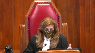
You said it was very significant, the statement, because it goes to the very nature of the assaults, and that it was very different from what the testimony of the complainant was at trial.
But didn’t she, Ms. Johnson, also give other details?
Her arms were held, she was on her stomach, he came in from behind, I can’t remember now whether she tried to stop him.
But didn’t she give other details that go to the very nature of the assault that were entirely consistent with what was said?
So my question to you is, don’t you have to look at this one sentence that you are focused on in the context of the testimony?
Speaker 1 (00:40:51): The first point is that this was a matter that the, in my submission, the trial judge had to sort out.
These were different, these were different utterances.
They were, it’s true.
There were, there was a prior, there was the statement made outside the elevator.
I woke up and he was inside of me right outside of the apartment.
And later at coffee, there was the second utterances I woke up and he was inside of me.
And then there was a description about the arms down and so on and so forth.
So this was a, this was a prior, these were, these prior statements were prior inconsistent statement and prior consistent statement.
So it was a mixed statement in that respect.
There were different utterances and it was clear that there were some elements that were prior consistencies and prior inconsistencies.
But in my submission, the trial judge had to deal with that.
And in, in, in, in addition, those prior statements, those prior statements, the, the, the consistency as I call it, my, he had my arms down and so on, was itself inconsistent with the description I woke up and he was inside of me.
But there’s no, there’s no analysis at all about that in the trial judge’s reasons.
And that was the concern of the majority in this case.
So then moving on to the, the, the, so I focused my submissions this morning on the issue, the, the statement I woke up and he was inside of me.
That is the, in my submission, the primary inconsistency that ought to have been addressed.
It constituted a misapprehension of the evidence by failing to consider the evidence and failing to give proper effect to the evidence.
So it’s the second and third branches of Morrissey.
So in my submission, the majority was correct to find that the trial judge misapprehended in that respect in terms of the statement, whether there’s.
Justice Moldaver (00:42:42): Quick question to you, if I may.
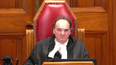
Ms. Johnson’s evidence was also very clear to the effect that she had no doubt in her own mind, her impression was that the complainant had been raped.
And that this comment, so-called comment about it, I don’t know if I was, was really in the context of it was so short, so short a timeframe, that I didn’t know whether I wanted to report it, go through with it, the whole bit.
Not that she didn’t understand that she wasn’t raped.
You seem to be just ignoring all this and not telling us about what Ms. Johnson’s impression was in cross-examination where she made it perfectly clear that there was no doubt in her mind.
Forget about the exact details.
That the complainant was alleging rape.
She did not consent to what happened.
The trial judge, it seems to me, could have been more fulsome perhaps in her analysis, but at the end of the day, it seems to me it’s clear on a fair reading of her reasons that she effectively accepted Ms. Johnson’s evidence to that extent, that this was not consensual sex.
There was a rape here.
That was her clear impression from what the word spoken by the complainant and why isn’t the trial judge entitled to come away with the exact same impression as opposed to saying, oh, my goodness, you know, in the heat of the moment when this complainant was totally distraught, she comes out with a couple of things that may not be exactly the same as what she says in total at trial, but the message to Ms. Johnson was perfectly clear.
I was raped.
What’s wrong with the trial judge coming to that conclusion and in effect blowing out of the water these suggestions that these so-called inconsistent statements are so fundamental?
Speaker 1 (00:45:06): Well, in my submission, they are.
They are inconsistent statements.
Justice Moldaver (00:45:10): Well, you say it.
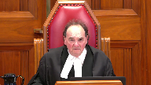
The trial judge heard your submissions and she disagreed with you.
We’re not here to retry this case.
It’s apparent from her reasons that she disagreed with you.
Couldn’t be more clear in my view, even though she doesn’t come right out and say it.
But it’s obvious that she’s adopting Ms. Johnson’s position, sort of communicated to her through the complainant that there was no doubt the complainant who was in a totally distraught condition at the time had been raped.
Speaker 1 (00:45:44): the first point I just wanted to make is that the complainant never gave an explanation for why she made that statement.
She denied making in the statement and denied remembering making that statement.
So that’s if she had said that in her evidence that would be a different matter.
But in this case and then going back to the first inconsistency, irrespective of whether the trial judge accepted that this was a non-consensual encounter.
Justice Brown (00:46:15): to the seriousness of the inconsistency, then?
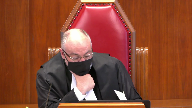
I mean, I’m looking at the record from Ms. Johnston’s cross-examination, and she’s asked about this.
This is at page 147 of the record, volume two.
And she says, it’s put to her, was that you thought she’d been raped and she didn’t seem to realize or think that that’s what happened, correct?
And she says, my impression was that the accused put himself inside of the complainant without consent, and the complainant shared that with me the following morning.
And then further down, and you and her didn’t seem to be on the same page as far as that conclusion, correct?
And she says, we were on the same page in the sense that she was telling me what had happened and I was listening.
Where we weren’t on the same page that day was the severity of the fact that it had happened regardless of, even though it had only been a couple of minutes.
It seems to me then that her impression was that the complainant’s doubts related not to what happened, but about the implications or the seriousness of what had happened, which surely cannot be a significant inconsistency if in fact it is an inconsistency.
Speaker 1 (00:47:39): Well, and that’s that goes to the second inconsistency that that’s I don’t know if it was rape.
It was only a few minutes but what my focus here in my concern the the primary inconsistency I say is is
And I is the issue of I woke up
and he was inside of me.
That’s the issue It describes a different assault even though they are still uncut.
They’re still non consensual encounters They’re still sexual assaults.
But if a complainant says well she may not
Justice Brown (00:48:06): know that.
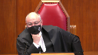
I mean, I’m trying to understand the significance of whether she understood that as a rape or not.
I mean, we might say, well, you know, it’s obviously a rape.
So if she doesn’t and then says later she doesn’t know if she was raped, that’s inconsistent.
But what the witness to that statement is saying is she had no doubt about what had happened.
She just didn’t seem to understand its implications because it happened over such a short period of time.
Speaker 1 (00:48:38): Right.

The issue, though, is how she describes the assault.
The issue is how she describes the sexual assault factually.
I woke up and he was inside of me.
Different than the factual assertions that she makes in her trial testimony describing this violent assault.
Those are different things.
Now, independent of whether she questioned the severity of it, factually, that’s what she said outside of the elevator eight minutes after to her friend.
Defense counsel squarely raises it.
It goes to her memory and reliability.
And if the complainant, in any case, for example, even if the prior statement, for example, is unconsensual anal sex, and then at the trial, the complainant says, well, it was unconsensual vaginal sex.
Whether it’s unconsensual or not, that doesn’t matter.
What it goes to is goes to the reliability of the evidence.
And that’s the third branch, of course, of WD.
Notwithstanding that you’ve rejected the accused evidence, is this evidence reliable?
Does it raise a reasonable doubt?
And that’s where defense counsel’s first submissions, the portion I’ve taken the court to this morning, that’s those submissions were firmly rooted in that.
And that’s the majority’s concern in this case, because this case hinged on the question of credibility and reliability.
Justice Newbery rightly held this was material evidence.
It has to been dealt with.
Now, this is not an issue about, this evidence is material, it’s relevant to the, and this is a question in my submission of trial fairness.
The trial judge has got to deal with this evidence.
It’s relevant evidence.
And there’s no analysis at all in my submission about this evidence.
So I just wanted to address a final point.
In relation to no dispute what happened, the court of appeal in my submission looked at the evidence as a whole.
Is there a dispute as to what happened, not as between the specific issue as between Mr. Smith and the complainant, but is there a dispute as between Ms. Johnston’s evidence, the prior statements of Ms. Johnston’s evidence, and the complainant’s evidence?
So subject to any further questions, those are my submissions.
Justice Moldaver (00:50:46): All right, thank you very much, Mr. Bursky.
Any reply, Ms. Shaw?
Overlapping speakers (00:50:50): No reply, thank you.
Justice Moldaver (00:50:51): All right, thank you both very much for your submissions.
I’d ask you to stay where you are and we’ll return in a bit.
Okay, thank you.
Speaker 1 (00:51:32): like schools.
Justice Moldaver (00:51:53): Well, let me begin by thanking both counsel very much for your very able submissions.
The court is grateful to you.
We have been able to resolve this matter and Justice Brown will deliver the reasons of the court.
Justice Brown (00:52:11): Thank you, justice.
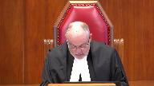
We would allow the appeal, set aside the order for a new trial and restore the respondent’s conviction for sexual assault substantially for the reasons of justice Dixon.
In particular, we agree with justice Dixon that the trial judge’s failure to deal properly with the prior inconsistent statements does not mean that she failed to consider or give effect to them.
Further, and even if the trial judge did not consider the statements in assessing the complainant’s credibility and reliability, that error did not cause a miscarriage of justice.
Determining whether a misapprehension of evidence has caused a miscarriage of justice requires that the appellate court assess the nature and extent of the error and its significance to the verdict, Morrissey at page 221.
It is a stringent standard met only where the apprehension could have affected the outcome, lower at paragraph 7.
While testimonial inconsistencies may be relevant when assessing a witness’s credibility and reliability, only some are of such significance that failing to consider them will meet the standard.
In this case, we agree with justice Dixon that the inconsistencies, assuming they are inconsistencies, between the complainant’s statements to her friend shortly after the assault and her trial testimony are not significant.
While it may have been preferable for the trial judge to address them, her failure to do so does not cast doubt on her assessment of the complainant’s credibility and reliability or the safety of the conviction.
Consequently, the threshold for a miscarriage of justice has not been met.
Justice Moldaver (00:53:48): All right.
Thank you very much.
Thank you, counsel.